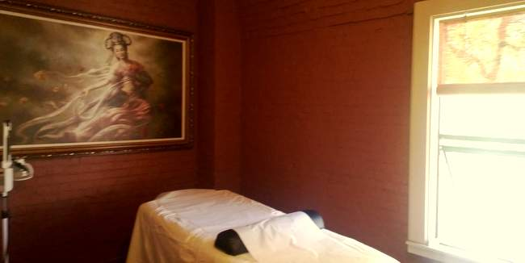

Services
Clarity Acupuncture and Herbs provides personalized holistic care for men, women, and children with a primary focus on prevention and wellness.
We provide – Acupuncture, electrical stimulation, moxa, cupping, gua sha, massage, Chinese herbal therapy, as well as diet and lifestyle modification.
What To Expect For the First Visit:
Please note, we are not accepting new insurance patients at this time. Thank you for understanding.
Your first visit will be an estimated time period of 2 hours. This includes time for a full inquiry and analysis of your current health concern or any relevant issues as well as ample time for acupuncture and alternative therapeutic modalities listed above. If an herbal consult is desired, additional time may be needed.
For first time visits, please download and complete the 2 forms below and bring them with you.
New Patient Intake Form
Arbitration Agreement
Return Visits:
Return visits are 45-75 min and are used for review of previous treatment results as well as an adjusted treatment for the current status of your ailment. These treatments would include acupuncture as well as the alternative modalities listed above.
Fee Schedule
Discounts available for same day payments, students, seniors, and low income families.
Day Of Payments (CC, Check, Cash)
| 10-Minute Phone Consultation: | Free |
| Ear Acupuncture (Only): | $35 |
| First Treatment (All-Inclusive): | $120 |
| Follow-up (All-Inclusive): | $80 |
Ailments Treated:
Women's Health
- Hormonal Imbalances – PMS, irregular periods, mood changes, infertility, decreased sex drive, night sweats, hot flashes, sleep changes, vaginal dryness, skin issues, headaches, fatigue, weight gain
- Chronic Urinary Tract Infections (UTI's)
- Anti-Aging – physiological optimization, cosmetic acupuncture
- Insomnia
- Fatigue
- Allergies/Asthma
- Chronic Disease – high cholesterol, diabetes, auto-immune disease, bowel issues
- Pain
- Osteoporosis
- Menopause
- Fertility
Men's Health
- Pain
- Preventative Healthcare
- Allergies/Asthma
- Chronic Disease – diabetes, high cholesterol, auto-immune disease, bowel issues
- Sex Health – erectile dysfunction, infertility, decreased sex drive
- Prostate Health
- Heart Health
- Emotional Health
- Fatigue
- Skin Conditions
- Diet and Exercise Guidance
Children's Health
- Immune Support/ Preventative Care
- Allergies/Asthma
- Skin Conditions – eczema, psoriasis, acne, hives, allergies
- Digestive Disorders – diarrhea, constipation, acid reflux, abdominal pain, nausea and vomiting
- Nutrition and Lifestyle counseling
- Emotional Wellness – ADD/ADHD, depression, anxiety, sleep disorder
General Health Conditions
- Neck/Back Pain and Sciatica
- Trigeminal Neuralgia
- Carpal Tunnel Syndrome
- Frozen Shoulder
- Allergies/ Immune System
- Auto-Immune Disorders
- Diabetes
- Digestive Issues/ Irritable Bowel Syndrome
- Fatigue
- Headaches
- Insomnia
- Stroke/ Bell's Palsy
- Heart Health
- Auto/Sports Injuries
- Stress
- Weight Management
- Smoking Cessation
- Nausea (Pregnancy, Chemo, etc)